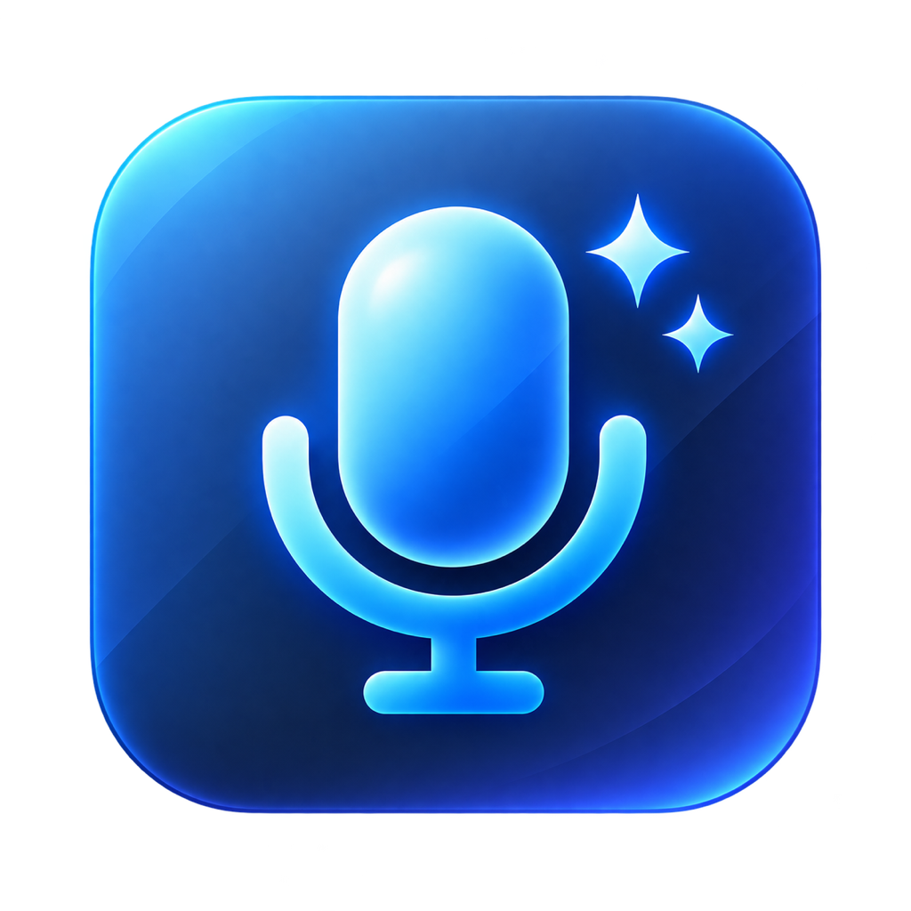

Aloud
macos · menu-bar · dictation · whisper + llm
Speak, and your Mac types for you — hold Fn and talk. Release, and your words land in whatever app you're using.
How it works
Hold the Fn key and say what you want to type
Release — your speech is transcribed by Aloud in seconds
AI fixes typos and spacing, then types it straight into the app you're using
Why Aloud
Hold to Talk
Hold Fn to record, release to stop — like a walkie-talkie. Or switch to toggle mode (double-tap to start, single tap to stop). Rebind to any key you like.
Fast with Groq
Transcription runs on whisper-large-v3-turbo via Groq — blazing fast, with a generous free tier. One API key powers everything.
AI Correction
Every transcript is polished by an LLM automatically — typos fixed, spacing cleaned, sentences smoothed. Works in English, Thai, and more.
Lives in the Menu Bar
No cluttered windows, no Dock icon — a quiet menu-bar app that's always ready and works with every app on your Mac.
Secure & Notarized
Signed with a Developer ID and notarized by Apple — double-click to install, no security warnings. Your API key never leaves your machine.
Featherweight
Pure Swift, ~3MB installer. No Electron, no heavy background processes weighing your Mac down.
Get started in 2 minutes
- Download Aloud.dmg and drag it into Applications
- Open the app → allow Microphone & Accessibility when prompted
- Grab a free API key at console.groq.com and paste it in Settings (or set
GROQ_API_KEYin~/.zshrc) - Hold Fn and start talking